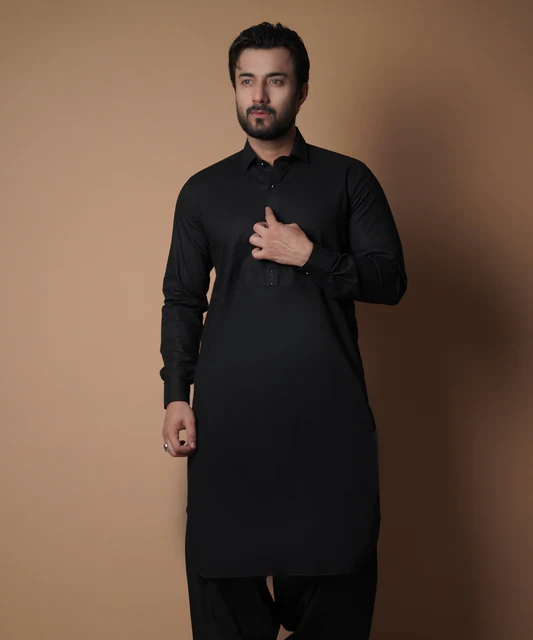

History of Shalwar Kameez
The shalwar kameez is a South Asian traditional outfit that is worn by various people. Shalwar are trousers that are loose and kameez is a long shirt. It is popular in mainly Pakistan, along with India, Bangladesh, and Afghanistan. The legs of the Shalwar are wide on the top, and narrow on the bottom, the modern kameez usually has a straight and flat cut, early day cuts were traditional cuts. It's origins are beleived to be with Turkic-Iranian horse riding steppe peoples of Central Asia, which had a few of its tribes convert to Islam. After a series of raids in the 12th century that established the Islamic Turkic-Iranian rule, that later became the Moghul empire, which is what now is northern India and Pakistan, the fashion boomed and the Shalwar became one of the post popular suits in the area.
Women usually wear their shalwar kameez with a long scarf called a dupatta around the head or neck, depending on their beliefs too. For Muslims, even after it was not considered associated with Islam, many women still op to wear it, as a less strict alternative to a hijab. For Hindus, it is useful the most when the head must be covered, as in a temple or presence of elders. Mainly for other women, it is just a stylish accessory.